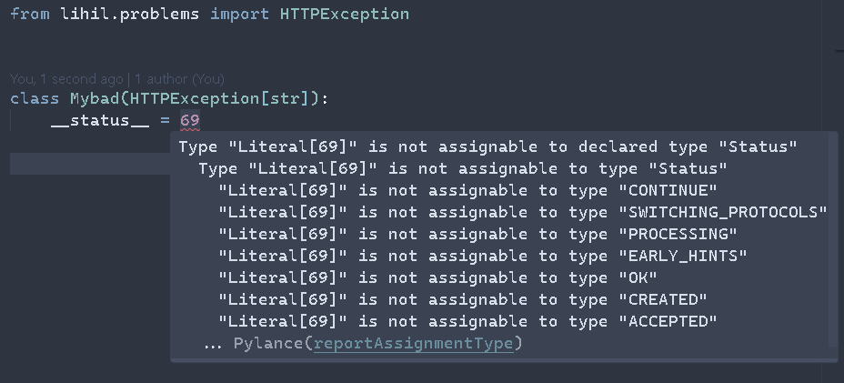
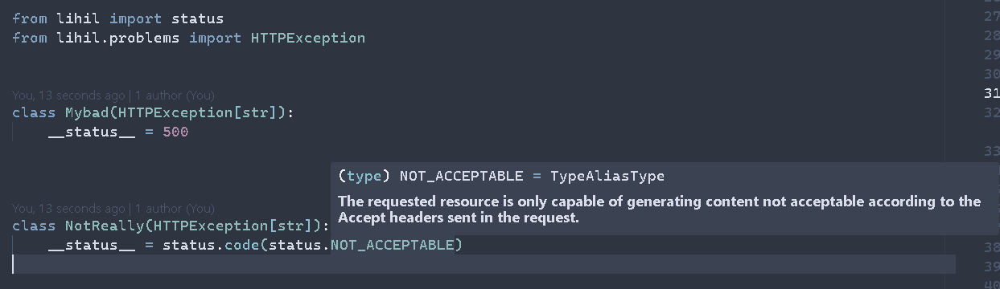

NOTE: We have refactored our docs site and migrated from lihil/lihil (You are here) to lihil, This site is deprecated and won't have the latest updates
Lihil /ˈliːhaɪl/ — a performant, productive, and professional web framework with a vision:
Making Python the mainstream programming language for web development.


Lihil is
-
Performant: 50%-100% faster than ASGI frameworks offering similar functionalities, even more with its own server. see benchmarks, web-frameworks-benchmark
-
Productive: Lihil includes essential middleware for enterprise development—such as authentication, authorization, throttling, and event publishing—enabling productivity from day one. Its ergonomic API, strong typing support, and built-in solutions for common challenges—along with developer-friendly features like OpenAPI documentation generation—empower you to build applications quickly without compromising on flexibility or extensibility.
-
professional: Start small, move fast, achieve great, Lihil follows industry standards (RFC 9110, RFC 9457, etc.) and best practices like event-driven architecture (EDA) and service choreography to help you deliver robust, scalable solutions with confidence.
uv
if you want to install this project with uv
- init your web project with
project_name
- install lihil via uv, this will solve all dependencies for your in a dedicated venv.
Features
Low memory Usage
lihil is deeply optimized for memory usage, significantly reduce GC overhead, making your services more robust and resilient under load.
Param Parsing & Validation
Lihil provides a high level abstraction for parsing request, validating rquest data against endpoint type hints using msgspe, which is extremly performant, 12x faster and 25x more memory efficient than pydantic v2.
see benchmarks,
- Param Parsing: Automatically parse parameters from query strings, path parameters, headers, and request bodies
- Validation: Parameters are automatically converted to & validated against their annotated types and constraints.
- Custom Decoders: Apply custom decoders to have the maximum control of how your param should be parsed & validated.
from lihil import Payload, Header, Route, Meta, use
from .service import get_user_service, UserService
class UserPayload(Payload): # memory optimized data structure that does not involve in gc.
user_name: Annotated[str, Meta(min_length=1)] # non-empty string with length >= 1
all_users = Route("users")
all_users.factory(get_user_service)
# All parameters are automatically parsed and validated
@all_users.sub("{user_id}").post # POST /users/{user_id}
async def create_user(
user_id: str, # from URL path
auth_token: Header[str, Literal["x-auth-token"]], # from request headers
user_data: UserPayload, # from request body
service: UserService
) -> Resp[str, 201]: ...
Dependency Injection
Lihil features a powerful dependency injection system:
- Automatic Resolution: Dependencies are automatically resolved and injected based on type hints.
- Scoped Dependencies: Support for nested, infinite levels of scoped, singleton, and transient dependencies
- Nested Dependencies: Dependencies can have their own dependencies
- Factory Support: Create dependencies using factory functions with custom configuration
- Lazy Initialization: Dependencies are only created when needed
async def get_conn(engine: Engine):
async with engine.connect() as conn:
yield conn
async def get_users(conn: AsyncConnection):
return await conn.execute(text("SELECT * FROM users"))
@Route("users").get
async def list_users(users: Annotated[list[User], use(get_users)], is_active: bool=True):
return [u for u in users if u.is_active == is_active]
For more in-depth tutorials on DI, checkout https://lihil.cc/ididi
OpenAPI schemas
Lihil automatically generates comprehensive OpenAPI documentation:
- Type-Based Schema Generation: Schemas are derived from Python type annotations
- Detailed Parameter Documentation: Documents all parameters with their sources, types, and requirements
- Response Documentation: Automatically documents response types and status codes
- Error Documentation: Includes detailed error schemas in the documentation
- Examples Support: Add examples to make your API documentation more helpful
Exception-Problem Mapping & Problem Page
Lihil implements the RFC 7807 Problem Details standard for error reporting
lihil maps your exception to a Problem and generate detailed response based on your exception.
class OutOfStockError(HTTPException[str]):
"The order can't be placed because items are out of stock"
__status__ = 422
def __init__(self, order: Order):
detail: str = f"{order} can't be placed, because {order.items} is short in quantity"
super().__init__(detail)
when such exception is raised from endpoint, client would receive a response like this
{
"type_": "out-of-stock-error",
"status": 422,
"title": "The order can't be placed because items are out of stock",
"detail": "order(id=43, items=[massager], quantity=0) can't be placed, because [massager] is short in quantity",
"instance": "/users/ben/orders/43"
}
Builtin Auth system
from lihil import Payload, Route
from lihil.auth.jwt import JWTAuth, JWTPayload
from lihil.auth.oauth import OAuth2PasswordFlow, OAuthLoginForm
me = Route("me")
token = Route("token")
class UserProfile(JWTPayload):
__jwt_claims__ = {"expires_in": 300}
user_id: str = field(name="sub")
role: Literal["admin", "user"] = "user"
class User(Payload):
name: str
email: str
token_based = OAuth2PasswordFlow(token_url="token")
@me.get(auth_scheme=token_based)
async def get_user(profile: JWTAuth[UserProfile]) -> User:
assert profile.role == "user"
return User(name="user", email="user@email.com")
@token.post
async def create_token(credentials: OAuthLoginForm) -> JWTAuth[UserProfile]:
return UserProfile(user_id="user123")
Message System
Lihil has built-in support for both in-process message handling
There are three primitives for event:
- publish: asynchronous and blocking event handling that shares the same scope with caller.
- emit: non-blocking asynchrounous event hanlding, has its own scope.
- sink: a thin wrapper around external dependency for data persistence, such as message queue or database.
from lihil import Resp, Route, status
from lihil.plugins.bus import Event, EventBus
from lihil.plugins.testclient import LocalClient
class TodoCreated(Event):
name: str
content: str
async def listen_create(created: TodoCreated, ctx):
assert created.name
assert created.content
async def listen_twice(created: TodoCreated, ctx):
assert created.name
assert created.content
bus_route = Route("/bus", listeners=[listen_create, listen_twice])
@bus_route.post
async def create_todo(name: str, content: str, bus: EventBus) -> Resp[None, status.OK]:
await bus.publish(TodoCreated(name, content))
An event can have multiple event handlers, they will be called in sequence, config your BusTerminal with publisher then inject it to Lihil.
-
An event handler can have as many dependencies as you want, but it should at least contain two params: a sub type of
Event, and a sub type ofMessageContext. -
if a handler is registered with a parent event, it will listen to all of its sub events. for example,
-
a handler that listens to
UserEvent, will also be called whenUserCreated(UserEvent),UserDeleted(UserEvent)event is published/emitted. -
you can also publish event during event handling, to do so, declare one of your dependency as
EventBus,
async def listen_create(created: TodoCreated, _: Any, bus: EventBus):
if is_expired(created.created_at):
event = TodoExpired.from_event(created)
await bus.publish(event)
typing support
typing plays a significant role in the world of lihil, lihil combines generics, function overriding, paramspec and other advanced typing features to give you the best typing support possible.
with its dedicated, insanely detailed typing support, lihil will give you something to smile about.


versioning
lihil follows semantic versioning, where a version in x.y.z represents:
- x: major, breaking change
- y: minor, feature updates
- z: patch, bug fixes, typing updates
v1.0.0 will be the first stable major version.